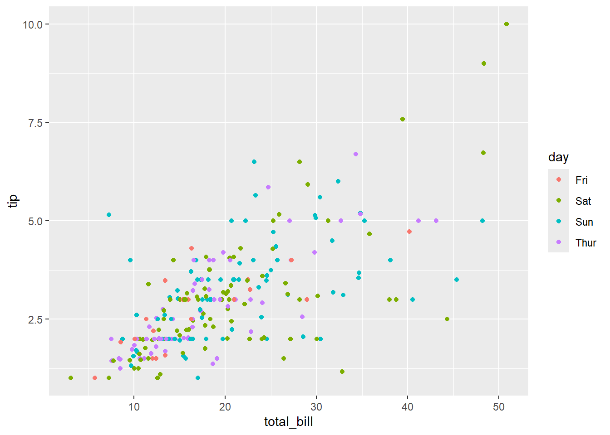

# Assign 1 to X
x = 1
# Assign 2 to Y.
y = 2
z = x + y
z[1] 3Variable & Vector
Before attending class for Week 2, please complete the following tasks:
Watch the pre-class video for Week 2.
Ensure that your laptop has R and RStudio installed and ready to use.
Download pdf for all the preclass content
Grammar of data science.
Variable: data storage space
Data types: numeric, character, categorical, logical, special constants, etc.
Operators: arithmetic, comparison, logical operators
Vector: a collection of single values
Array: A set of data with columns and rows (or A set of vectors)
Data frame: A structure in which different data types are organized in a tabular form. Each property has the same size.
List: A tabular structure similar to “Data frame”. The size of each property can be different.
Grammar study is essential to save data and process operations
a=1
b=2
c=a+b
When there needs a lot of data, such as student grade processing
A single variable cannot represent all the data
By using vector, matrix, data frame, list, etc., it is possible to store a lot of data with one variable name.
There are many things around us are organized in a tabular form for easy data management. (e.g. attendance checking, grade, and member management, etc.)
Storing values in variables
Value assignment using =, <-, ->
# Assign 1 to X
x = 1
# Assign 2 to Y.
y = 2
z = x + y
z[1] 3x + y -> z
z[1] 3Example of exchanging two values
Make temporary storage space and save one value in advance
x = 1
y = 2
temp = x
x = y
y = temp
x[1] 2y[1] 1Basic data types of R
Numeric: int / num / cplx
Character: chr
Categorical: factor
Logical: True(T), FALSE(F)
Special constant
NULL: undefined value
NA: missing value
Inf & -Inf: Positive & Negative infinity
NaN: Not a Number, values cannot be computed such as 0/0, Inf/Inf, etc
Examples for basic data types in R
Numeric
# Data type #
x = 5
y = 2
x/y[1] 2.5Complex
xi = 1 + 2i
yi = 1 - 2i
xi+yi[1] 2+0iCharacter (string)
str = "Hello, World!"
str[1] "Hello, World!"Categorical (factor)
blood.type = factor(c('A', 'B', 'O', 'AB'))
blood.type[1] A B O AB
Levels: A AB B OLogical & Special constant
T[1] TRUEF[1] FALSExinf = Inf
yinf = -Inf
xinf/yinf[1] NaNData type verification and conversion functions
Functions to check data type
class(x)
typeof(x)
is.integer(x)
is.numeric(x)
is.complex(x)
is.character(x)
is.na(x)
Functions to transform data type
as.factor(x)
as.integer(x)
as.numeric(x)
as.character(x)
as.matrix(x)
as.array(x)
x = 1 # If you simply put 1 in x, x is a numeric type.
x[1] 1is.integer(x)[1] FALSEx = 1L # If 1L is entered in x, x is an integer.
x[1] 1is.integer(x)[1] TRUEx = as.integer(1)
is.integer(x)[1] TRUEArithmetic Operators
| Operator | Description |
| + | addition |
| - | subtraction |
| * | multiplication |
| / | division |
| ^ or ** | exponentiation |
| x %% y | modulus (x mod y) 5%%2 is 1 |
| x %/% y | integer division 5%/%2 is 2 |
Logical Operators
| Operator | Description |
| < | less than |
| <= | less than or equal to |
| > | greater than |
| >= | greater than or equal to |
| == | exactly equal to |
| != | not equal to |
| !x | Not x |
| **x | y** |
| x & y | x AND y |
| isTRUE(x) | test if X is TRUE |
More information for operators: https://www.statmethods.net/management/operators.html
# Create a vector with 7 elements by increasing the numbers 1 to 7 by 1.
1:7 [1] 1 2 3 4 5 6 7# Decrease by 1 from 7 to 1 to create a vector with 7 elements.
7:1 [1] 7 6 5 4 3 2 1vector(length = 5)[1] FALSE FALSE FALSE FALSE FALSE# Create a vector consisting of 1 to 5 elements. Same as 1:5
c(1:5) [1] 1 2 3 4 5# Create a vector of elements 1 to 6 by combining elements 1 to 3 and elements 4 to 6
c(1, 2, 3, c(4:6)) [1] 1 2 3 4 5 6# Store a vector consisting of 1 to 3 elements in x
x = c(1, 2, 3)
x [1] 1 2 3# Create y as an empty vector
y = c()
# Created by adding the c(1:3) vector to the existing y vector
y = c(y, c(1:3))
y [1] 1 2 3# Create a vector from 1 to 10 in increments of 2
seq(from = 1, to = 10, by = 2) [1] 1 3 5 7 9# Same code with above
seq(1, 10, by = 2) [1] 1 3 5 7 9# Create a vector with 11 elements from 0 to 1 in increments of 0.1
seq(0, 1, by = 0.1) [1] 0.0 0.1 0.2 0.3 0.4 0.5 0.6 0.7 0.8 0.9 1.0# Create a vector with 11 elements from 0 to 1
seq(0, 1, length.out = 11) [1] 0.0 0.1 0.2 0.3 0.4 0.5 0.6 0.7 0.8 0.9 1.0# Create a vector by repeating the (1, 2, 3) vector twice
rep(c(1:3), times = 2) [1] 1 2 3 1 2 3# (1, 2, 3) Creates a vector by repeating the individual elements of the vector twice
rep(c(1:3), each = 2) [1] 1 1 2 2 3 3x = c(2, 4, 6, 8, 10)
# Find the length (size) of the x vector
length(x) [1] 5# Find the value of element 1 of the x vector
x[1] [1] 2# An error occurs if you enter elements 1, 2, and 3 of the x vector.
# x[1, 2, 3]
# When finding elements 1, 2, and 3 of the x vector, they must be grouped into a vector.
x[c(1, 2, 3)] [1] 2 4 6# Output the value excluding elements 1, 2, and 3 from the x vector
x[-c(1, 2, 3)] [1] 8 10# Print elements 1 to 3 in the x vector
x[c(1:3)] [1] 2 4 6# Add 2 to each individual element of the x vector
x = c(1, 2, 3, 4)
y = c(5, 6, 7, 8)
z = c(3, 4)
w = c(5, 6, 7)
x+2 [1] 3 4 5 6# Since the size of the x vector and y vector are the same, each element is added
x + y [1] 6 8 10 12# If the x vector is an integer multiple of the size of the z vector, add the smaller vector elements in a circular motion.
x + z [1] 4 6 6 8# Operation error because the sizes of x and w are not integer multiples
x + w Warning in x + w: longer object length is not a multiple of shorter object
length[1] 6 8 10 9# Check if element value of x vector is greater than 5
x > 5 [1] FALSE FALSE FALSE FALSE# Check if all elements of the x vector are greater than 5
all(x > 5) [1] FALSE# Check if any of the element values of the x vector are greater than 5
any(x > 5) [1] FALSEx = 1:10
# Extract the first 6 elements of data
head(x) [1] 1 2 3 4 5 6# Extract the last 6 elements of data
tail(x) [1] 5 6 7 8 9 10# Extract the first 3 elements of data
head(x, 3) [1] 1 2 3# Extract the last 3 elements of data
tail(x, 3) [1] 8 9 10x = c(1, 2, 3)
y = c(3, 4, 5)
z = c(3, 1, 2)
# Union set
union(x, y) [1] 1 2 3 4 5# Intersection set
intersect(x, y) [1] 3# Set difference (X - Y)
setdiff(x, y) [1] 1 2# Set difference (Y - X)
setdiff(y, x) [1] 4 5# Compare whether x and y have the same elements
setequal(x, y) [1] FALSE# Compare whether x and z have the same elements
setequal(x, z) [1] TRUEThe best way to learn data science: practice with examples
Swim: Jump into the water and play around…
Carpentry: Cut woods, drill, and practice
Data science: with data, visualize, analyze..
Data has a thousand faces
Numeric like distance or weight
Factors like blood type
Characters like address or name
The Data given in base R
Can be checked by data() command
ex) ChickWeight data “Weight versus age of chicks on different diets”, women data “Average heights and weights for American women aged 30-39”
women height weight
1 58 115
2 59 117
3 60 120
4 61 123
5 62 126
6 63 129
7 64 132
8 65 135
9 66 139
10 67 142
11 68 146
12 69 150
13 70 154
14 71 159
15 72 164Car datsetstr(cars)'data.frame': 50 obs. of 2 variables:
$ speed: num 4 4 7 7 8 9 10 10 10 11 ...
$ dist : num 2 10 4 22 16 10 18 26 34 17 ...cars speed dist
1 4 2
2 4 10
3 7 4
4 7 22
5 8 16
6 9 10
7 10 18
8 10 26
9 10 34
10 11 17
11 11 28
12 12 14
13 12 20
14 12 24
15 12 28
16 13 26
17 13 34
18 13 34
19 13 46
20 14 26
21 14 36
22 14 60
23 14 80
24 15 20
25 15 26
26 15 54
27 16 32
28 16 40
29 17 32
30 17 40
31 17 50
32 18 42
33 18 56
34 18 76
35 18 84
36 19 36
37 19 46
38 19 68
39 20 32
40 20 48
41 20 52
42 20 56
43 20 64
44 22 66
45 23 54
46 24 70
47 24 92
48 24 93
49 24 120
50 25 85str function: Function summarizing the contents of the data
Various visualization functions
Most widely used function in base R: plot
plot(women)Apply different visualization options
Color options (parameters) col,
xlab and ylab to name the axis,
pch to specify the symbol shape
plot(cars)
plot(cars, col = 'blue')
plot(cars, col = 'blue', xlab = "speed")
plot(cars, col = 'blue', xlab = "speed", ylab = 'distance')
plot(cars, col = 'blue', xlab = "speed", ylab = 'distance', pch = 18)# ?plot
# help(plot)Think incrementally (Step by Step)
After creating the most basic features, check the behavior, add a new feature to it, and add another feature to verify it.
Once you’ve created everything and checked it, it’s hard to find out where the cause is later
See Figure above: Check the most basic plot function, add the col option to check, add the xlab and ylab options, and add the pch option to check
Specify working directory
The way to Save Data Files in a Specified Directory (Folder)
getwd() function displays the current working directory (the red part is the computer name)
getwd()[1] "C:/R/Rproj/[2]web_pages/changjunlee_com_2/teaching/ds101/weekly/posts"setwd() to set the new working directory
Use of library (package)
Libraries are software that collects R functions developed for specific fields.
E.g.) ggplot2 is a collection of functions that visualize your data neatly and consistently
E.g.) gapminder is a collection of functions needed to utilize gapminder data, which gathers population, GDP per capita, and life expectancy in five years from 1952 to 2007.
R is so powerful and popular because of its huge library
If you access the CRAN site, you will see that it is still being added.
When using it, attach it using the library function

Library installation saves library files to your hard disk
Library Attachment loads it from Hard Disk to Main Memory
Lovely iris data
In 1936, Edger Anderson collected irises in the Gaspe Peninsula in eastern Canada.
Collect 50 from each three species(setosa, versicolor, verginica) on the same day
The same person measures the width and length of the petals and sepals with the same ruler
Has been famous since Statistician Professor Ronald Fisher published a paper with this data and is still widely used.
str(iris)'data.frame': 150 obs. of 5 variables:
$ Sepal.Length: num 5.1 4.9 4.7 4.6 5 5.4 4.6 5 4.4 4.9 ...
$ Sepal.Width : num 3.5 3 3.2 3.1 3.6 3.9 3.4 3.4 2.9 3.1 ...
$ Petal.Length: num 1.4 1.4 1.3 1.5 1.4 1.7 1.4 1.5 1.4 1.5 ...
$ Petal.Width : num 0.2 0.2 0.2 0.2 0.2 0.4 0.3 0.2 0.2 0.1 ...
$ Species : Factor w/ 3 levels "setosa","versicolor",..: 1 1 1 1 1 1 1 1 1 1 ...head(iris, 10) Sepal.Length Sepal.Width Petal.Length Petal.Width Species
1 5.1 3.5 1.4 0.2 setosa
2 4.9 3.0 1.4 0.2 setosa
3 4.7 3.2 1.3 0.2 setosa
4 4.6 3.1 1.5 0.2 setosa
5 5.0 3.6 1.4 0.2 setosa
6 5.4 3.9 1.7 0.4 setosa
7 4.6 3.4 1.4 0.3 setosa
8 5.0 3.4 1.5 0.2 setosa
9 4.4 2.9 1.4 0.2 setosa
10 4.9 3.1 1.5 0.1 setosaplot(iris)
See the correlation of two properties
col = iris$Species is an option to draw colors differently by species
plot(iris$Petal.Width,
iris$Petal.Length,
col = iris$Species)
flowchart LR
A[Collecting Data] --> B(EDA)
B --> C{Modeling}
Tips data
Tips earning at tables in a restaurant
Can we get more tips using data science?
Step 1: Data collecting
Collect values in seven variables
total_bill
tip
gender
smoker
day
time
size: number of people in a table
After weeks of hard work, collected 244 and saved it to the tips.csv file
tips = read.csv('https://raw.githubusercontent.com/mwaskom/seaborn-data/master/tips.csv')
str(tips)'data.frame': 244 obs. of 7 variables:
$ total_bill: num 17 10.3 21 23.7 24.6 ...
$ tip : num 1.01 1.66 3.5 3.31 3.61 4.71 2 3.12 1.96 3.23 ...
$ sex : chr "Female" "Male" "Male" "Male" ...
$ smoker : chr "No" "No" "No" "No" ...
$ day : chr "Sun" "Sun" "Sun" "Sun" ...
$ time : chr "Dinner" "Dinner" "Dinner" "Dinner" ...
$ size : int 2 3 3 2 4 4 2 4 2 2 ...head(tips, 10) total_bill tip sex smoker day time size
1 16.99 1.01 Female No Sun Dinner 2
2 10.34 1.66 Male No Sun Dinner 3
3 21.01 3.50 Male No Sun Dinner 3
4 23.68 3.31 Male No Sun Dinner 2
5 24.59 3.61 Female No Sun Dinner 4
6 25.29 4.71 Male No Sun Dinner 4
7 8.77 2.00 Male No Sun Dinner 2
8 26.88 3.12 Male No Sun Dinner 4
9 15.04 1.96 Male No Sun Dinner 2
10 14.78 3.23 Male No Sun Dinner 2Interpreting the first sample, it was shown that two people had dinner on Sunday, no smokers, and a $1.01 tip at the table where a woman paid the total $16.99.
Step 2: Exploratory Data Analysis (EDA)
summary function to check the summary statistics
How to explain the summary statistics below?
summary(tips) total_bill tip sex smoker
Min. : 3.07 Min. : 1.000 Length:244 Length:244
1st Qu.:13.35 1st Qu.: 2.000 Class :character Class :character
Median :17.80 Median : 2.900 Mode :character Mode :character
Mean :19.79 Mean : 2.998
3rd Qu.:24.13 3rd Qu.: 3.562
Max. :50.81 Max. :10.000
day time size
Length:244 Length:244 Min. :1.00
Class :character Class :character 1st Qu.:2.00
Mode :character Mode :character Median :2.00
Mean :2.57
3rd Qu.:3.00
Max. :6.00 This statistic summary doesn’t reveal the effect of day or gender on the tip, so let’s explore it further with visualization.
ggplot2 libraries (for now just run it and study the meaning)library(dplyr)
Attaching package: 'dplyr'The following objects are masked from 'package:stats':
filter, lagThe following objects are masked from 'package:base':
intersect, setdiff, setequal, unionlibrary(ggplot2)What do you see in the figures below?
tips %>% ggplot(aes(size)) + geom_histogram() `stat_bin()` using `bins = 30`. Pick better value with `binwidth`.
Tip amount according to bill amount (total_bill)
tips %>% ggplot(aes(total_bill, tip)) + geom_point() 
Added day information using color
tips %>% ggplot(aes(total_bill, tip)) +
geom_point(aes(col = day)) 
Women and men separated by different symbols
tips %>% ggplot(aes(total_bill, tip)) +
geom_point(aes(col = day, pch = sex), size = 3) 
Step 3: Modeling
Limitations of Exploratory Data Analysis: You can design a strategy to make more money, but you can’t predict exactly how much more income will come from the new strategy.
Modeling allows predictions
Create future financial portfolios
What will the following code return?
MyVector <- c(12, 456, 34.5, 23, 55, “34hello”)
typeof(MyVector)
Which of these functions is NOT used to create vectors?
Create the vector below by using ‘seq’ function
2.0 2.5 3.0 3.5 4.0 4.5 5.0
Create the vector below by using ‘rep’ function
3 3 3 3 3 3 3 3 3
Create the vector below by using ‘rep’ function
80 20 80 20 80 20 80 20
Are these vectors possible forms in R?

mountain <- c("tree", "rock", "dirt", "dolphin", "waterfall")How would you access the word “dolphin” in this vector?
How to extract 3rd and 5th values from the vector below?

From x vector, How to extract vectors like below?
In the rapidly evolving world of data science, Kaggle has emerged as a pivotal platform for both newbies and experts in the field. Established in 2010, Kaggle began as a platform for machine learning competitions but has since expanded into a comprehensive ecosystem that includes datasets, a code-sharing utility, and a vibrant community of data scientists and machine learning practitioners. This blog post explores the multifaceted offerings of Kaggle, highlighting how it serves as a gateway to data science mastery.
At its core, Kaggle is synonymous with its competitions. These challenges, sponsored by organizations ranging from small startups to tech giants, present real-world problems that require innovative data science solutions. Competitors from around the globe vie for prestige, cash prizes, and sometimes even job offers by developing the most accurate models. These competitions cover a broad spectrum of topics, from predictive modeling and analytics to deep learning and computer vision.
The competitive environment not only spurs innovation but also provides participants with a tangible way to benchmark their skills against a global talent pool. For beginners, Kaggle competitions offer a structured learning path. They can start with “Getting Started” competitions, which are designed for educational purposes and ease learners into the world of data science competitions.
Checkout Kaggle
Kaggle’s dataset repository is a goldmine for data scientists seeking to experiment with different types of data or to undertake new projects. With thousands of datasets available, covering everything from economics and health to video games and sports, Kaggle makes it easy for users to find data that matches their interests or research needs.
These datasets are not only free to access but also come with community insights, kernels (code notebooks), and discussions that help users understand the data better and how to apply various analysis techniques effectively.
What truly sets Kaggle apart is its community. With millions of users, Kaggle’s forums and discussions are a hub for knowledge exchange, networking, and support. Whether you’re looking for advice on how to improve your model, seeking partners for a competition, or curious about the latest trends in data science, the Kaggle community is there to support you.
Checkout DACON